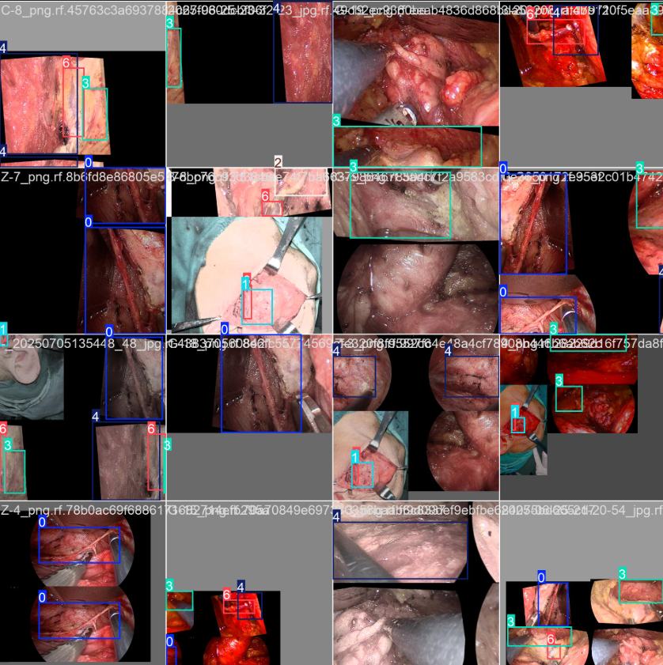

今日预测总数
1,284
12.5%
较昨日增长
平均检测精度
96.8%
0.3%
较上周提升
神经识别种类
7
已覆盖
包含主要面部神经
预测耗时
0.24s
0.03s
平均单张图像处理时间
实时面部神经预测结果

最近预测记录
| ID | 时间 | 预测神经数 | 平均置信度 | 状态 | 操作 |
|---|---|---|---|---|---|
| #2845 | 14:35:22 | 3 | 96.8% | 正常 | |
| #2844 | 14:28:15 | 2 | 95.2% | 正常 | |
| #2843 | 14:15:47 | 3 | 89.7% | 低置信度 | |
| #2842 | 14:09:33 | 4 | 97.1% | 正常 |
神经类型预测分布

预测精度指标
面神经检测精度
93.3%
三叉神经检测精度
89.7%
腺体检测精度
98.2%
下颌神经检测精度
92.5%
肌肉组织检测精度
95.1%
预测样本展示
面神经预测样本
置信度: 98.5%